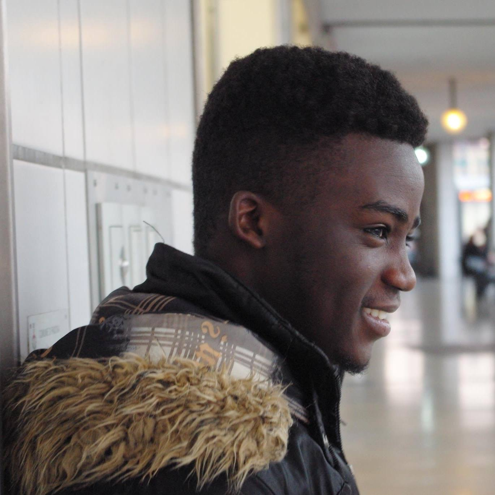
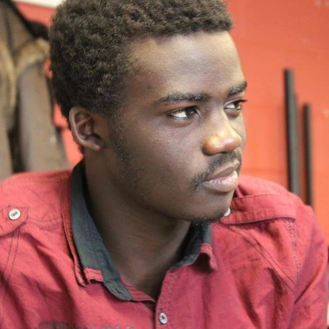

Eurobug International Youth Work
 
Emmanuel Samuel is founder and coordinator of Eurobug Youth Group in Kilkenny.
His role within Eurobug includes facilitating the youth group in Kilkenny and developing international youth mobility activities (youth exchanges) under the Erasmus+ program together with other young people from Europe.
He was born in Uganda as a South Sudanese refugee but now he is an Irish citizen.
His currently undertaking an honours bachelor of arts degree in Social Science at Waterford Institute of Technology.He started working with Eurobug since 2015.

 Elena Furisova role within Eurobug is to coordinate social media channels ,publish summaries of Eurobug Youth Group activities in Kilkenny.
She also support communication team members and to maintain on-going relationships with local media such as radio stations and newspapers.
She is originally from Czech Republic and she have been living in Kilkenny Ireland for the past 8 years. She is currently studying Media and Public Relations at Institute of Technology Carlow.
she is also an active member of Eurobug Youth Group in Kilkenny.
Elena Furisova role within Eurobug is to coordinate social media channels ,publish summaries of Eurobug Youth Group activities in Kilkenny.
She also support communication team members and to maintain on-going relationships with local media such as radio stations and newspapers.
She is originally from Czech Republic and she have been living in Kilkenny Ireland for the past 8 years. She is currently studying Media and Public Relations at Institute of Technology Carlow.
she is also an active member of Eurobug Youth Group in Kilkenny.

 Kelvin Akpaloo role within Eurobug is to develop international youth mobility activities (youth exchanges) under the Erasmus+ program together with other young people from Europe and to bring creative perspective to all Eurobug activities.
He also initiate and facilitate creative activities with Eurobug Youth Group in Kilkenny.
He was born in Ghana, but then moved to Ireland in 2007 and now he is an Irish citizen living in Dublin.
He recently graduated from DCU in Media production Management.He is also work as a choreographer and as a performer.
Kelvin Akpaloo role within Eurobug is to develop international youth mobility activities (youth exchanges) under the Erasmus+ program together with other young people from Europe and to bring creative perspective to all Eurobug activities.
He also initiate and facilitate creative activities with Eurobug Youth Group in Kilkenny.
He was born in Ghana, but then moved to Ireland in 2007 and now he is an Irish citizen living in Dublin.
He recently graduated from DCU in Media production Management.He is also work as a choreographer and as a performer.